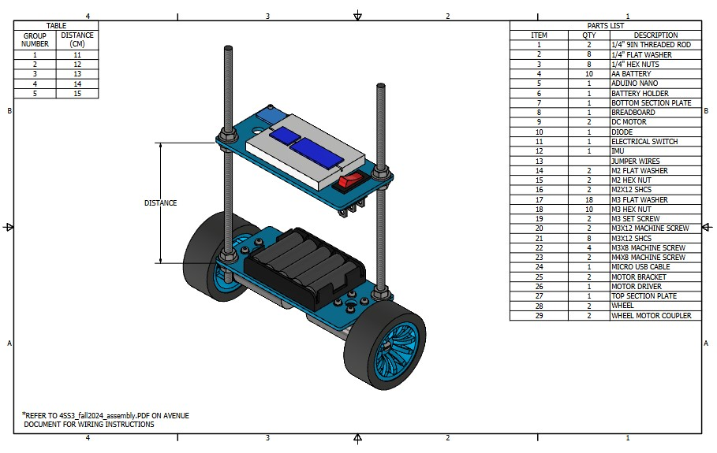
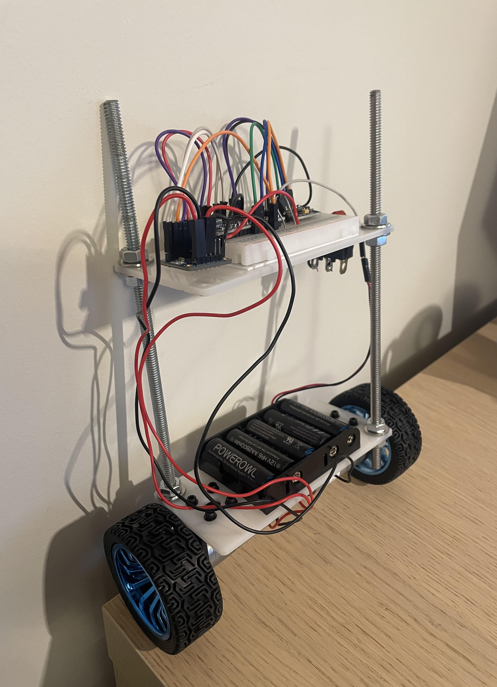
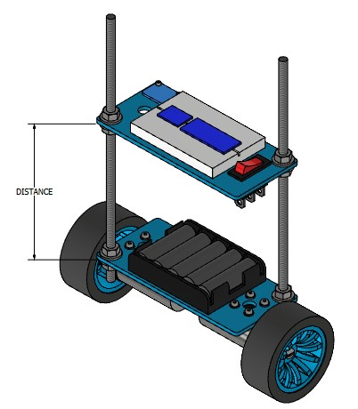

Self-balancing robot
Modeled, assembled and programmed to stay upright with a gyroscope and a PID loop.

What
This project focuses on designing a self-balancing robot that uses the MPU6050 sensor and a PID controller to maintain its upright position. Built and programmed on an Arduino platform, the robot continuously monitors its orientation using the MPU sensor and dynamically adjusts motor outputs in real-time to counteract any imbalance. It showcases the integration of control systems, sensors, and embedded programming in robotics.
How
The project began by modeling the robot's mechanical structure and selecting components, including the MPU sensor for orientation feedback. The hardware was assembled, with motors connected to an Arduino microcontroller. The software was then developed, integrating the MPU sensor readings with a PID control algorithm to ensure accurate motor adjustments. The robot was tested iteratively, tuning the PID parameters for optimal balance and stability.
Results
The completed robot successfully demonstrated the ability to self-balance for up to one minute, effectively maintaining stability and responding to minor disturbances. This validated the integration of hardware and software systems and the effectiveness of the PID control algorithm.

